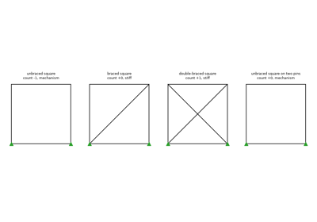
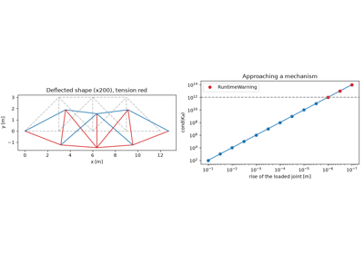
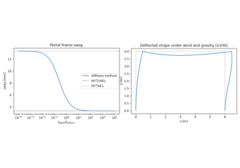

Breakthroughs in Structural Engineering#
“Strength is essential but otherwise unimportant.” – attributed to Hardy Cross
Builders raised cathedrals and bridges for centuries by rule and
precedent. Structural engineering became a science in three steps.
Seventeenth- and eighteenth-century natural philosophers asked how strong
a beam is and when a column buckles. Engineers of the nineteenth century,
faced with iron railway bridges, worked out the theory of beams, trusses
and statically indeterminate structures, and the energy theorems that tie
loads to displacements. The twentieth century added plastic collapse,
relaxation methods for frames and, finally, matrix methods run on a
computer. The entries trace the ideas behind
engineeringkit.structural_engineering. Each links to the
implementing function and to a gallery example devoted to it.
1638 – Galileo’s Cantilever#
In the second day of the Two New Sciences, Galileo Galilei asked what load breaks a beam built into a wall. He treated the beam as a lever turning about the bottom edge of the wall section, with the whole section pulling with the same stress. The breaking moment then grows with the width and the square of the depth, so a plank set on edge is stronger than the same plank laid flat, and large animals and buildings need proportionally thicker members. The scaling was right. The constant was not: it took Navier’s neutral axis at the centroid to divide it by three.
Implementation: engineeringkit.structural_engineering.rectangular_section_modulus()
and engineeringkit.structural_engineering.rectangular_second_moment().
The example compares Galileo’s breaking moment with the elastic one and
checks the \(bh^2\) scaling.
References: G. Galilei, Discorsi e dimostrazioni matematiche intorno a due nuove scienze (Elsevier, Leiden, 1638), second day.
1678 – Hooke’s Ut tensio, sic vis#
Robert Hooke published his law as an anagram in 1676 and its solution two years later: “as the extension, so the force”. Springs, wires and wooden rods all stretched in proportion to the load. Written for a bar of length \(L\), area \(A\) and modulus \(E\) (Young’s, 1807), the extension is \(\delta = PL/(AE)\), and the energy stored is the area under the load-extension line, \(U = P\delta/2\). The linear law is the constitutive relation that turns every later structural theory from statics into a calculation of displacements.
Implementation: engineeringkit.structural_engineering.axial_deformation()
and engineeringkit.structural_engineering.strain_energy_axial(). The
example repeats Hooke’s experiment on a steel wire and checks the
extension and the stored energy.
References: R. Hooke, Lectures de Potentia Restitutiva, or of Spring (John Martyn, London, 1678).
1744 – Euler’s Column Buckling#
In an appendix on elastic curves to his book on the calculus of variations, Leonhard Euler found the load at which a straight elastic column can stay in equilibrium bent as well as straight. For a pin-ended column it is \(P_{cr} = \pi^2EI/L^2\). Other end conditions change the length of the buckled half-wave, written today as an effective length \(KL\). Euler’s load does not depend on the strength of the material at all, which is why slender columns fail by stability and stocky ones by crushing. Engineers distrusted the formula for a century, because the columns they tested were not slender enough for it to apply.
Implementation: engineeringkit.structural_engineering.euler_buckling_load(),
engineeringkit.structural_engineering.radius_of_gyration() and
engineeringkit.structural_engineering.slenderness_ratio(). The example
finds Euler’s load as the lowest eigenvalue of the finite-difference column
equation and plots the Euler hyperbola against yield.
References: L. Euler, Methodus inveniendi lineas curvas maximi minimive proprietate gaudentes (Bousquet, Lausanne, 1744), Additamentum I, “De curvis elasticis”.
1784 – Coulomb’s Torsion#
Charles-Augustin Coulomb hung a weight from a thin wire, twisted it and timed the oscillations. The restoring torque was proportional to the angle of twist, to the fourth power of the diameter and inversely to the length, the law \(\phi = TL/(GJ)\) with \(J = \pi d^4/32\). The torsion balance built on it measured the electric force the next year and, in Cavendish’s hands, the density of the Earth. For engineers it gave the shear stress \(\tau = Tr/J\) and stiffness of shafts.
Implementation: engineeringkit.structural_engineering.torsion_angle()
and engineeringkit.structural_engineering.torsion_shear_stress().
The example simulates Coulomb’s torsion pendulum, recovers the shear
modulus from its period and checks the fourth-power law.
References: C.-A. Coulomb, “Recherches théoriques et expérimentales sur la force de torsion et sur l’élasticité des fils de métal,” Hist. Acad. Roy. Sci. (1784, published 1787) 229-269.
1829 – Poisson’s Ratio#
A bar stretched along its axis gets thinner. Siméon Denis Poisson’s molecular theory of elasticity predicted that the lateral strain is always one quarter of the axial strain. Experiments by Wertheim and others soon showed that the ratio \(\nu\) depends on the material, and the argument over it led to the modern two-constant theory of isotropic elasticity. \(\nu\) lies between -1 and 1/2 for a stable material, and \(\nu = 1/2\) means no change of volume.
Implementation: engineeringkit.structural_engineering.poisson_lateral_strain().
The example compares the contraction of steel, rubber and cork and checks
the first-order volume change \((1 - 2\nu)\varepsilon\).
References: S.-D. Poisson, “Mémoire sur l’équilibre et le mouvement des corps élastiques,” Mém. Acad. Roy. Sci. Inst. France 8 (1829) 357-570.
1847 – Whipple’s Method of Joints#
American railway bridges of the 1840s were built from rules of thumb, and some of them fell down. Squire Whipple, a canal engineer from Utica, showed that the force in every member of a pin-jointed truss follows from statics alone. Each joint is in equilibrium, so its two equations give the forces in two members. Work from a support across the truss, two unknowns at a time, and every force is found. His book was the first to analyse trusses rather than test them, and Herman Haupt reached the same results independently in 1851.
Implementation: engineeringkit.structural_engineering.method_of_joints().
The example solves a six-panel Pratt truss and checks every chord force
against the method of sections, \(M/h\).
References: S. Whipple, A Work on Bridge Building (H. H. Curtiss, Utica, 1847).
1857 – Clapeyron’s Three-Moment Equation#
A beam continuous over several supports is statically indeterminate: the support moments cannot be found from equilibrium alone. Émile Clapeyron met the problem while rebuilding the Asnières railway bridge over the Seine. He required the slope of the beam to be continuous over each interior support, which gives one linear equation per support linking its moment to those of its two neighbours. The system is tridiagonal and small, and it made continuous girders, lighter than a row of simple spans, practical to design.
Implementation: engineeringkit.structural_engineering.three_moment_equation().
The example checks the textbook coefficients for equal spans, then
integrates the curvature of an unequal three-span beam to show it does not
move at the interior supports.
References: É. Clapeyron, “Calcul d’une poutre élastique reposant librement sur des appuis inégalement espacés,” C. R. Acad. Sci. Paris 45 (1857) 1076-1080.
1864 – Maxwell’s Rigidity Count and Reciprocal Theorem#
James Clerk Maxwell’s short paper on frames made two contributions. A plane frame of \(j\) joints needs \(2j - 3\) bars to be stiff, or, counting the \(r\) support reactions, \(m + r = 2j\) for a statically determinate truss. The count is necessary but not sufficient, since bars can be put where they are not needed. The paper also stated the reciprocal theorem: in a linear elastic structure, the deflection at \(i\) caused by a unit load at \(j\) equals the deflection at \(j\) caused by a unit load at \(i\). Betti generalised it in 1872, and Mohr built the force method for indeterminate trusses on it.
Implementation: engineeringkit.structural_engineering.truss_determinacy()
and engineeringkit.structural_engineering.maxwell_betti_reciprocity().
The example counts four trusses, one of which passes the count and is
still a mechanism, and checks that the flexibility matrix of a redundant
truss is symmetric.
References: J. C. Maxwell, “On the calculation of the equilibrium and stiffness of frames,” Phil. Mag. 27 (1864) 294-299; E. Betti, “Teoria dell’elasticità,” Il Nuovo Cimento 7-8 (1872) 5-21.

Maxwell’s rigidity count and reciprocal theorem (1864)
1867 – Winkler’s Influence Lines#
A railway bridge must be checked for a train standing in every position. Emil Winkler, and Otto Mohr independently the next year, plotted the value of one response, such as the moment at a chosen section, against the position of a single unit load. With this influence line the response to any train is the sum of the axle loads times the ordinates under them, and the worst position of the train can be read off the plot. Influence lines remain the standard tool for moving loads on bridges and crane girders.
Implementation: engineeringkit.structural_engineering.influence_line().
The example finds the worst position of a four-axle locomotive on a 20 m
span and checks it against superposed point-load solutions.
References: E. Winkler, Die Lehre von der Elasticität und Festigkeit (Dominicus, Prague, 1867); O. Mohr, “Beitrag zur Theorie der Holz- und Eisen-Constructionen,” Z. Architekten- und Ingenieur-Vereins zu Hannover 14 (1868) 19-51.
1879 – Castigliano’s Theorem#
In his 1873 engineering thesis at Turin, extended into a book in 1879, Alberto Castigliano showed that the partial derivative of the strain energy with respect to a load is the displacement at that load, in its direction. For a beam this is the integral of \((M/EI)\,\partial M/\partial P\) along the span. A dummy load, set to zero after differentiating, gives the displacement where no load acts. The companion theorem of least work found the redundant forces of an indeterminate structure by minimising the energy.
Implementation: engineeringkit.structural_engineering.castigliano_deflection()
(integrating \(M\,\partial M/\partial P/(EI)\) with Simpson’s rule) and
engineeringkit.structural_engineering.strain_energy_bending_constant_moment().
The example finds the tip deflection of a tapered cantilever, checks it by
double integration and by the energy balance, and uses a dummy load at
midspan.
References: A. Castigliano, Théorie de l’équilibre des systèmes élastiques et ses applications (A. F. Negro, Turin, 1879).
1882 – Mohr’s Circle#
Otto Mohr showed that the normal and shear stresses on every plane through a point, plotted against each other, fall on one circle. Its centre is the mean normal stress, its radius the largest in-plane shear stress, and its intersections with the axis are the principal stresses. Turning the element by \(\theta\) moves the point by \(2\theta\) around the circle. Culmann had drawn the stresses in a beam graphically in 1866; Mohr’s construction made the transformation one picture, and he used it to state his theory of failure.
Implementation: engineeringkit.structural_engineering.mohr_circle()
and engineeringkit.structural_engineering.stress_transformation().
The example traces the circle by rotating an element, checks the principal
stresses against the eigenvalues of the stress tensor, and finds the
plane of maximum shear.
References: O. Mohr, “Über die Darstellung des Spannungszustandes und des Deformationszustandes eines Körperelementes,” Zivilingenieur 28 (1882) 113-156.
1889 – Engesser’s Tangent-Modulus Load#
Columns of intermediate length failed well below Euler’s load. Friedrich Engesser argued that once the stress passes the proportional limit, a column bends against the material’s tangent modulus \(E_t = d\sigma/d\varepsilon\), so the critical stress solves \(\sigma = \pi^2E_t(\sigma)/(KL/r)^2\). Engesser later replaced it by a “double-modulus” load, which was thought correct for half a century, until F. R. Shanley showed in 1947 that real columns start to bend at the tangent-modulus load. Column curves in design codes descend from it.
Implementation: engineeringkit.structural_engineering.tangent_modulus_load()
(solving for the buckling stress with Brent’s method). The example builds
the column curve of a Ramberg-Osgood aluminium alloy and checks each
stress against Engesser’s equation.
References: F. Engesser, “Ueber die Knickfestigkeit gerader Stäbe,” Z. Architekten- und Ingenieur-Vereins zu Hannover 35 (1889) 455-462; F. R. Shanley, “Inelastic column theory,” J. Aeronaut. Sci. 14 (1947) 261-268.
1914 – Kazinczy’s Plastic Hinge#
Gábor Kazinczy loaded steel beams built into concrete walls in Budapest and found that they carried far more than elastic theory allowed. When the most stressed section yielded through its whole depth, it went on turning at a constant plastic moment \(M_p\), a plastic hinge, and the load moved to other sections until enough hinges had formed to make a mechanism. Plastic design of steel frames grew from his tests, through Maier-Leibnitz in Germany and Baker’s group at Cambridge, into the limit-state codes.
Implementation: engineeringkit.structural_engineering.plastic_section_modulus()
and engineeringkit.structural_engineering.plastic_collapse_load().
The example follows a built-in beam under a uniform load from first yield
through hinges at the walls to collapse at \(16M_p/L^2\).
References: G. Kazinczy, “Kísérletek befalazott tartókkal” (Experiments with clamped girders), Betonszemle 2 (1914); J. F. Baker, M. R. Horne and J. Heyman, The Steel Skeleton, vol. 2 (Cambridge University Press, 1956).
1930 – Hardy Cross’s Moment Distribution#
Continuous beams and building frames led to large sets of simultaneous equations that no engineer wanted to solve by hand. Hardy Cross proposed relaxation instead. Lock every joint and apply the fixed-end moments, then release one joint at a time: its unbalanced moment is shared among the members in proportion to their stiffness, and half of each share is carried over to the far end. Repeat until the joints balance. The method fitted on a sheet of paper, converged in a few cycles and was the main tool of frame analysis until computers replaced it.
Implementation: engineeringkit.structural_engineering.moment_distribution().
The example balances a three-span beam built in at one end, checks the
end moments against the stiffness method and plots the decay of the
unbalance.
References: H. Cross, “Analysis of continuous frames by distributing fixed-end moments,” Proc. ASCE 56 (1930) 919-928.
1956 – Turner, Clough, Martin and Topp: the Direct Stiffness Method#
At Boeing, M. J. Turner, R. W. Clough, H. C. Martin and L. J. Topp needed the stiffness of swept jet wings, which hand methods could not give. They wrote a stiffness matrix for each element, added the matrices into one global matrix according to the joints each element connects, and solved \(K_{ff}u_f = F_f\) on a computer. Indeterminate structures cost no more than determinate ones. The paper is the origin of the finite element method; Clough gave it that name in 1960. A near-mechanism gives a matrix that is invertible in floating point but meaningless, so the condition number of \(K_{ff}\) is part of the answer.
Implementation: engineeringkit.structural_engineering.PlanarTruss
(with \(\operatorname{cond}(K_{ff})\) and a warning near a mechanism).
The example checks a redundant truss against Clapeyron’s energy theorem,
then flattens a joint until the warning fires.
References: M. J. Turner, R. W. Clough, H. C. Martin and L. J. Topp, “Stiffness and deflection analysis of complex structures,” J. Aeronaut. Sci. 23 (1956) 805-823.

Turner, Clough, Martin and Topp: the direct stiffness method (1956)
1956 – Livesley’s Plane Frames by Computer#
Moment distribution assumes that the joints do not move sideways. A building frame under wind does sway, and hand methods needed an extra correction for every storey. R. K. Livesley programmed the stiffness method for rigid-jointed frames on the Manchester computer. Each member got a matrix with axial and bending terms, three degrees of freedom per joint, and the sway came out of the same solve as the rotations. Matrix frame analysis became the everyday tool of structural design offices.
Implementation: engineeringkit.structural_engineering.PlanarFrame.
The example sways a fixed-base portal frame, checks the result against
the rigid-beam and pinned-beam limits and checks the equilibrium of the
reactions under wind and gravity.
References: R. K. Livesley, “The application of an electronic digital computer to some problems of structural analysis,” Struct. Eng. 34 (1956) 1-12.

Livesley’s plane frames by direct stiffness (1956)